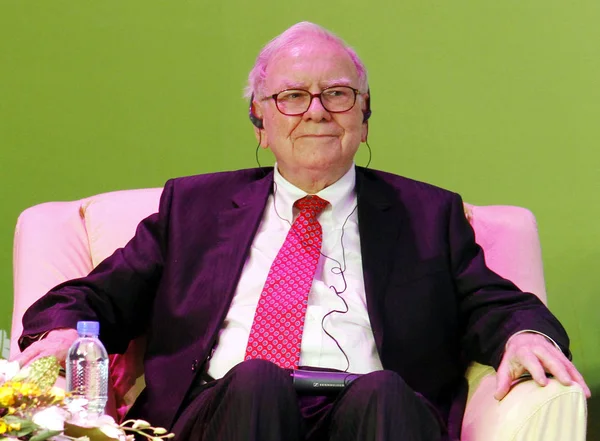

Warren Buffett
Chairman and CEO of Berkshire Hathaway

Basic Information
Known as the "Oracle of Omaha," Warren Buffett is one of the most successful investors of all time.
Buffett runs Berkshire Hathaway, which owns dozens of companies, including insurer Geico, battery maker Duracell and restaurant chain Dairy Queen.
The son of a U.S. congressman, he first bought stock at age 11 and first filed taxes at age 13.
He has promised to donate over 99% of his wealth. So far he has given more than $49 billion, mostly to the Gates Foundation and his kids' foundations.
In 2010, he and Bill Gates launched the Giving Pledge, asking billionaires to commit to donating at least half of their wealth to charitable causes.
- Buffett was born to Howard and Leila Buffett on August 30, 1930, in Omaha, Nebraska. He was the second of three children, and the only boy. His father was a stockbroker and four-term United States congressman. Howard served non-consecutive terms on the Republican ticket, but espoused libertarian views.
- Making money was an early interest for Buffett, who sold soft drinks and had a paper route. When he was 14 years old, he invested the earnings from these endeavors in 40 acres of land, which he then rented for a profit. At his father's urging, he applied to the University of Pennsylvania and was accepted. Unimpressed, Buffett left after two years, transferring to the University of Nebraska. Upon graduation, his father once again convinced him of the value of education, encouraging him to pursue a graduate degree. Harvard rejected Buffett, but Columbia accepted him. Buffett studied under Benjamin Graham, the father of value investing, and his time at Columbia set the stage for a storied career, albeit one with a slow start.
- Upon graduation, Graham refused to hire Buffett, even suggesting that he avoid a career on Wall Street. Buffett's father agreed with Graham, and Buffett returned to Omaha to work at his father's brokerage firm. He married Susan Thompson, and they started a family. A short while later, Graham had a change of heart and offered Buffett a job in New York.
- Once in New York, Buffett had the chance to build upon the investing theories he had learned from Graham at Columbia. Value investing, according to Graham, involved seeking stocks that were selling at an extraordinary discount to the value of the underlying assets, which he called the "intrinsic value". Buffett internalized the concept, but had an interest in taking it a step further. Unlike Graham, he wanted to look beyond the numbers and focus on the company's management team and its product's competitive advantage in the marketplace.
- In 1956, he returned to Omaha, launched Buffett Associates, Ltd., and purchased a house. In 1962 he was 30 years old and already a millionaire when he joined forces with Charlie Munger. Their collaboration eventually resulted in the development of an investment philosophy based on Buffett's idea of looking at value investing as something more than an attempt to wring the last few dollars out of dying businesses.
- Along the way, they purchased Berkshire Hathaway (NYSE:BRK.A), a dying textile mill. What began as a classic Graham value play became a longer-term investment when the business showed some signs of life. Cash flows from the textile business were used to fund other investments. Eventually, the original business was eclipsed by the other holdings. In 1985, Buffett shut down the textile business, but continued to use the name.
- Buffett's investment philosophy become one based on the principle of acquiring stock in what he believes are well-managed, undervalued companies. When he makes a purchase, his intention is to hold the securities indefinitely. Coca Cola, American Express and the Gillette Company all met his criteria and have remained in Berkshire Hathaway's portfolio for many years. In many cases, he purchased the companies outright, continuing to let their management teams handle the day-to-day business. A few of the better-known firms that fit into this category include See's Candies, Fruit of the Loom, Dairy Queen, The Pampered Chef and GEICO Auto Insurance.
-
Buffett's mystique remained intact until technology stocks became popular. As a resolute technophobe, Buffett sat out the incredible run-up in technology stocks during the late 1990s. Sticking to his guns and refusing to invest in companies that didn't meet his mandate, Buffett earned the scorn of Wall Street experts and was written off by many as a man whose time had passed. The tech wreck that occurred when the dotcom bubble burst bankrupted many of those experts. Buffett's profits doubled.
Rational people don't risk what they have and need for what they don't have and don't need.
Wikipedia entry